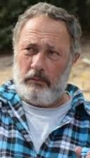

אליהו (צ׳רצ׳יל) מרגלית ז״ל
אליהו מרגלית בן 76 מניר עוז.
נולד בתל אביב, בשכונת יד אליהו, והגיע לקיבוץ ניר עוז עם גרעין נח"ל של השומר הצעיר.
אליהו ניהל את ענף הבקר והאורוות של ניר עוז אב לשלושה ילדים, גידל סוסים פצועים, עיוורים ועוד, אהב אותם וטיפל בהם.
הוא היה נשוי לדפנה, אב לנועה, דני ונילי, סבא לשלושה.
אליהו היה בוקר בנשמתו ובמשך שנים רבות ניהל את ענף הבקר ואת אורוות הסוסים של ניר עוז.
היה שייך לקבוצה שנקראת 'רוכבי הדרום', כולם תושבי הקיבוצים והמושבים מאזור הדרום כולם יחד רוכבים כבר יותר מ-50 שנה.
נרצח ב 7.10.23 כשיצא להאכיל את הסוסים שכל כך אהב וגופתו נחטפה לעזה.
בתו נילי מרגלית, בת 41, נחטפה לעזה ב-7.10 ושוחררה.